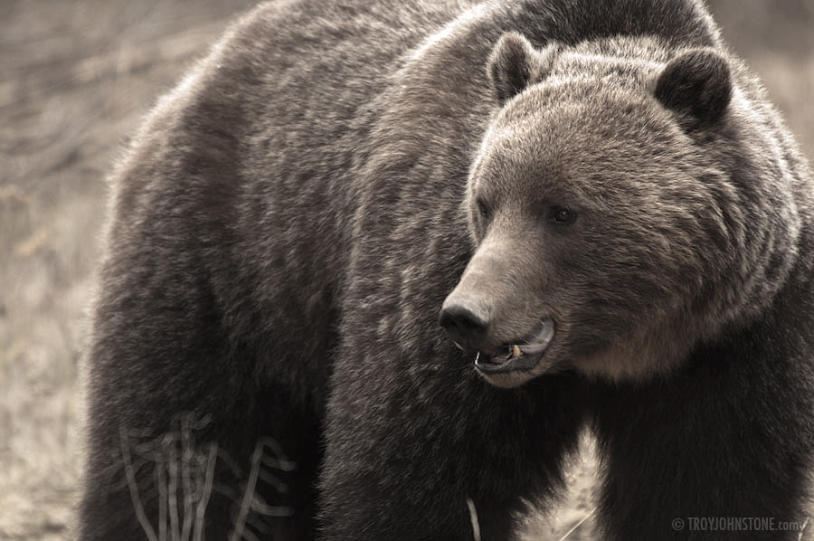

Welcome to Alberta Endangered Species
< /div>
Welcome to Alberta Endangered Species! This website will take you through the different species that are endangered in Alberta. Each page will contain information about the animal, its range and why it is endangered in Alberta. It will also contain further information on that species and what is being done to protect it. On top of this, we have ways for you to help animals and how you can get involved as well as further information and resources compiled to bring you this interactive website. I hope you enjoy the website!